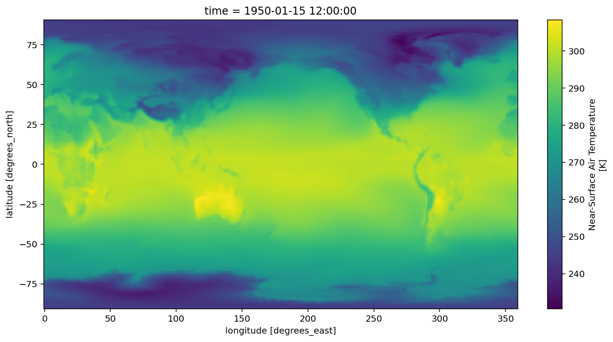
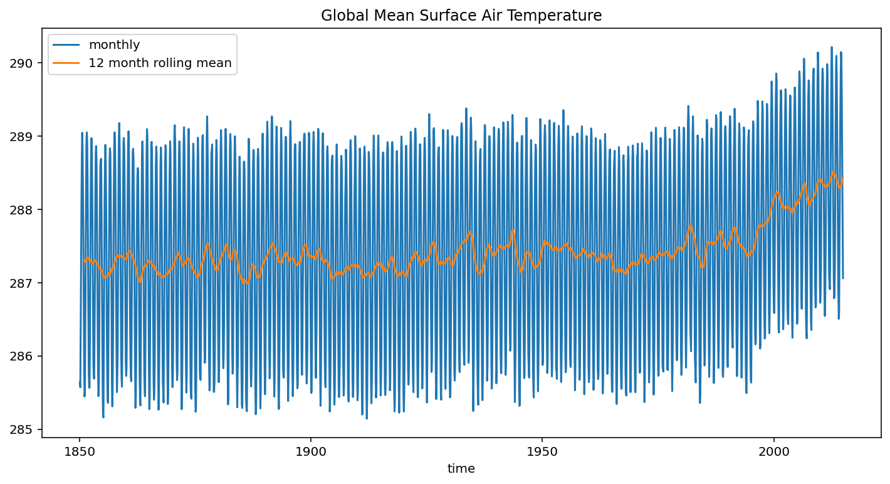

Basic search and load
from matplotlib import pyplot as plt
import numpy as np
import pandas as pd
import xarray as xr
import zarr
import gcsfs
xr.set_options(display_style='html')
%matplotlib inline
%config InlineBackend.figure_format = 'retina'
import cftime
plt.rcParams['figure.figsize'] = 12, 6
df = pd.read_csv('https://storage.googleapis.com/cmip6/cmip6-zarr-consolidated-stores.csv')
df.head()
| activity_id | institution_id | source_id | experiment_id | member_id | table_id | variable_id | grid_label | zstore | dcpp_init_year | |
|---|---|---|---|---|---|---|---|---|---|---|
| 0 | AerChemMIP | BCC | BCC-ESM1 | histSST | r1i1p1f1 | AERmon | mmrbc | gn | gs://cmip6/AerChemMIP/BCC/BCC-ESM1/histSST/r1i... | NaN |
| 1 | AerChemMIP | BCC | BCC-ESM1 | histSST | r1i1p1f1 | AERmon | mmrdust | gn | gs://cmip6/AerChemMIP/BCC/BCC-ESM1/histSST/r1i... | NaN |
| 2 | AerChemMIP | BCC | BCC-ESM1 | histSST | r1i1p1f1 | AERmon | mmroa | gn | gs://cmip6/AerChemMIP/BCC/BCC-ESM1/histSST/r1i... | NaN |
| 3 | AerChemMIP | BCC | BCC-ESM1 | histSST | r1i1p1f1 | AERmon | mmrso4 | gn | gs://cmip6/AerChemMIP/BCC/BCC-ESM1/histSST/r1i... | NaN |
| 4 | AerChemMIP | BCC | BCC-ESM1 | histSST | r1i1p1f1 | AERmon | mmrss | gn | gs://cmip6/AerChemMIP/BCC/BCC-ESM1/histSST/r1i... | NaN |
The columns of the dataframe correspond to the CMI6 controlled vocabulary. A beginners' guide to these terms is available in this document.
Here we filter the data to find monthly surface air temperature for historical experiments.
df_ta = df.query("activity_id=='CMIP' & table_id == 'Amon' & variable_id == 'tas' & experiment_id == 'historical'")
df_ta
| activity_id | institution_id | source_id | experiment_id | member_id | table_id | variable_id | grid_label | zstore | dcpp_init_year | |
|---|---|---|---|---|---|---|---|---|---|---|
| 4896 | CMIP | AS-RCEC | TaiESM1 | historical | r1i1p1f1 | Amon | tas | gn | gs://cmip6/CMIP/AS-RCEC/TaiESM1/historical/r1i... | NaN |
| 5674 | CMIP | BCC | BCC-CSM2-MR | historical | r1i1p1f1 | Amon | tas | gn | gs://cmip6/CMIP/BCC/BCC-CSM2-MR/historical/r1i... | NaN |
| 5778 | CMIP | BCC | BCC-CSM2-MR | historical | r2i1p1f1 | Amon | tas | gn | gs://cmip6/CMIP/BCC/BCC-CSM2-MR/historical/r2i... | NaN |
| 5870 | CMIP | BCC | BCC-CSM2-MR | historical | r3i1p1f1 | Amon | tas | gn | gs://cmip6/CMIP/BCC/BCC-CSM2-MR/historical/r3i... | NaN |
| 6180 | CMIP | BCC | BCC-ESM1 | historical | r1i1p1f1 | Amon | tas | gn | gs://cmip6/CMIP/BCC/BCC-ESM1/historical/r1i1p1... | NaN |
| ... | ... | ... | ... | ... | ... | ... | ... | ... | ... | ... |
| 50318 | CMIP | SNU | SAM0-UNICON | historical | r1i1p1f1 | Amon | tas | gn | gs://cmip6/CMIP/SNU/SAM0-UNICON/historical/r1i... | NaN |
| 50474 | CMIP | THU | CIESM | historical | r1i1p1f1 | Amon | tas | gr | gs://cmip6/CMIP/THU/CIESM/historical/r1i1p1f1/... | NaN |
| 50494 | CMIP | THU | CIESM | historical | r2i1p1f1 | Amon | tas | gr | gs://cmip6/CMIP/THU/CIESM/historical/r2i1p1f1/... | NaN |
| 50579 | CMIP | UA | MCM-UA-1-0 | historical | r1i1p1f1 | Amon | tas | gn | gs://cmip6/CMIP/UA/MCM-UA-1-0/historical/r1i1p... | NaN |
| 50620 | CMIP | UA | MCM-UA-1-0 | historical | r1i1p1f2 | Amon | tas | gn | gs://cmip6/CMIP/UA/MCM-UA-1-0/historical/r1i1p... | NaN |
311 rows × 10 columns
Now we do further filtering to find just the models from NCAR.
df_ta_ncar = df_ta.query('institution_id == "NCAR"')
df_ta_ncar
| activity_id | institution_id | source_id | experiment_id | member_id | table_id | variable_id | grid_label | zstore | dcpp_init_year | |
|---|---|---|---|---|---|---|---|---|---|---|
| 41761 | CMIP | NCAR | CESM2-FV2 | historical | r1i1p1f1 | Amon | tas | gn | gs://cmip6/CMIP/NCAR/CESM2-FV2/historical/r1i1... | NaN |
| 41923 | CMIP | NCAR | CESM2-FV2 | historical | r2i1p1f1 | Amon | tas | gn | gs://cmip6/CMIP/NCAR/CESM2-FV2/historical/r2i1... | NaN |
| 41934 | CMIP | NCAR | CESM2-FV2 | historical | r3i1p1f1 | Amon | tas | gn | gs://cmip6/CMIP/NCAR/CESM2-FV2/historical/r3i1... | NaN |
| 42102 | CMIP | NCAR | CESM2-WACCM-FV2 | historical | r1i1p1f1 | Amon | tas | gn | gs://cmip6/CMIP/NCAR/CESM2-WACCM-FV2/historica... | NaN |
| 42263 | CMIP | NCAR | CESM2-WACCM-FV2 | historical | r2i1p1f1 | Amon | tas | gn | gs://cmip6/CMIP/NCAR/CESM2-WACCM-FV2/historica... | NaN |
| 42274 | CMIP | NCAR | CESM2-WACCM-FV2 | historical | r3i1p1f1 | Amon | tas | gn | gs://cmip6/CMIP/NCAR/CESM2-WACCM-FV2/historica... | NaN |
| 42980 | CMIP | NCAR | CESM2-WACCM | historical | r1i1p1f1 | Amon | tas | gn | gs://cmip6/CMIP/NCAR/CESM2-WACCM/historical/r1... | NaN |
| 43255 | CMIP | NCAR | CESM2-WACCM | historical | r2i1p1f1 | Amon | tas | gn | gs://cmip6/CMIP/NCAR/CESM2-WACCM/historical/r2... | NaN |
| 43487 | CMIP | NCAR | CESM2-WACCM | historical | r3i1p1f1 | Amon | tas | gn | gs://cmip6/CMIP/NCAR/CESM2-WACCM/historical/r3... | NaN |
| 44529 | CMIP | NCAR | CESM2 | historical | r10i1p1f1 | Amon | tas | gn | gs://cmip6/CMIP/NCAR/CESM2/historical/r10i1p1f... | NaN |
| 44756 | CMIP | NCAR | CESM2 | historical | r11i1p1f1 | Amon | tas | gn | gs://cmip6/CMIP/NCAR/CESM2/historical/r11i1p1f... | NaN |
| 45003 | CMIP | NCAR | CESM2 | historical | r1i1p1f1 | Amon | tas | gn | gs://cmip6/CMIP/NCAR/CESM2/historical/r1i1p1f1... | NaN |
| 45280 | CMIP | NCAR | CESM2 | historical | r2i1p1f1 | Amon | tas | gn | gs://cmip6/CMIP/NCAR/CESM2/historical/r2i1p1f1... | NaN |
| 45557 | CMIP | NCAR | CESM2 | historical | r3i1p1f1 | Amon | tas | gn | gs://cmip6/CMIP/NCAR/CESM2/historical/r3i1p1f1... | NaN |
| 45834 | CMIP | NCAR | CESM2 | historical | r4i1p1f1 | Amon | tas | gn | gs://cmip6/CMIP/NCAR/CESM2/historical/r4i1p1f1... | NaN |
| 46077 | CMIP | NCAR | CESM2 | historical | r5i1p1f1 | Amon | tas | gn | gs://cmip6/CMIP/NCAR/CESM2/historical/r5i1p1f1... | NaN |
| 46320 | CMIP | NCAR | CESM2 | historical | r6i1p1f1 | Amon | tas | gn | gs://cmip6/CMIP/NCAR/CESM2/historical/r6i1p1f1... | NaN |
| 46564 | CMIP | NCAR | CESM2 | historical | r7i1p1f1 | Amon | tas | gn | gs://cmip6/CMIP/NCAR/CESM2/historical/r7i1p1f1... | NaN |
| 46806 | CMIP | NCAR | CESM2 | historical | r8i1p1f1 | Amon | tas | gn | gs://cmip6/CMIP/NCAR/CESM2/historical/r8i1p1f1... | NaN |
| 47048 | CMIP | NCAR | CESM2 | historical | r9i1p1f1 | Amon | tas | gn | gs://cmip6/CMIP/NCAR/CESM2/historical/r9i1p1f1... | NaN |
# this only needs to be created once
gcs = gcsfs.GCSFileSystem(token='anon')
# get the path to a specific zarr store (the first one from the dataframe above)
zstore = df_ta_ncar.zstore.values[-1]
# create a mutable-mapping-style interface to the store
mapper = gcs.get_mapper(zstore)
# open it using xarray and zarr
ds = xr.open_zarr(mapper, consolidated=True)
ds
xarray.Dataset
- lat: 192
- lon: 288
- nbnd: 2
- time: 1980
- lat(lat)float64-90.0 -89.06 -88.12 ... 89.06 90.0
- axis :
- Y
- bounds :
- lat_bnds
- standard_name :
- latitude
- title :
- Latitude
- type :
- double
- units :
- degrees_north
- valid_max :
- 90.0
- valid_min :
- -90.0
array([-90. , -89.057592, -88.115183, -87.172775, -86.230366, -85.287958, -84.34555 , -83.403141, -82.460733, -81.518325, -80.575916, -79.633508, -78.691099, -77.748691, -76.806283, -75.863874, -74.921466, -73.979058, -73.036649, -72.094241, -71.151832, -70.209424, -69.267016, -68.324607, -67.382199, -66.439791, -65.497382, -64.554974, -63.612565, -62.670157, -61.727749, -60.78534 , -59.842932, -58.900524, -57.958115, -57.015707, -56.073298, -55.13089 , -54.188482, -53.246073, -52.303665, -51.361257, -50.418848, -49.47644 , -48.534031, -47.591623, -46.649215, -45.706806, -44.764398, -43.82199 , -42.879581, -41.937173, -40.994764, -40.052356, -39.109948, -38.167539, -37.225131, -36.282723, -35.340314, -34.397906, -33.455497, -32.513089, -31.570681, -30.628272, -29.685864, -28.743455, -27.801047, -26.858639, -25.91623 , -24.973822, -24.031414, -23.089005, -22.146597, -21.204188, -20.26178 , -19.319372, -18.376963, -17.434555, -16.492147, -15.549738, -14.60733 , -13.664921, -12.722513, -11.780105, -10.837696, -9.895288, -8.95288 , -8.010471, -7.068063, -6.125654, -5.183246, -4.240838, -3.298429, -2.356021, -1.413613, -0.471204, 0.471204, 1.413613, 2.356021, 3.298429, 4.240838, 5.183246, 6.125654, 7.068063, 8.010471, 8.95288 , 9.895288, 10.837696, 11.780105, 12.722513, 13.664921, 14.60733 , 15.549738, 16.492147, 17.434555, 18.376963, 19.319372, 20.26178 , 21.204188, 22.146597, 23.089005, 24.031414, 24.973822, 25.91623 , 26.858639, 27.801047, 28.743455, 29.685864, 30.628272, 31.570681, 32.513089, 33.455497, 34.397906, 35.340314, 36.282723, 37.225131, 38.167539, 39.109948, 40.052356, 40.994764, 41.937173, 42.879581, 43.82199 , 44.764398, 45.706806, 46.649215, 47.591623, 48.534031, 49.47644 , 50.418848, 51.361257, 52.303665, 53.246073, 54.188482, 55.13089 , 56.073298, 57.015707, 57.958115, 58.900524, 59.842932, 60.78534 , 61.727749, 62.670157, 63.612565, 64.554974, 65.497382, 66.439791, 67.382199, 68.324607, 69.267016, 70.209424, 71.151832, 72.094241, 73.036649, 73.979058, 74.921466, 75.863874, 76.806283, 77.748691, 78.691099, 79.633508, 80.575916, 81.518325, 82.460733, 83.403141, 84.34555 , 85.287958, 86.230366, 87.172775, 88.115183, 89.057592, 90. ]) - lat_bnds(lat, nbnd)float32dask.array<chunksize=(192, 2), meta=np.ndarray>
- units :
- degrees_north
Array Chunk Bytes 1.54 kB 1.54 kB Shape (192, 2) (192, 2) Count 2 Tasks 1 Chunks Type float32 numpy.ndarray - lon(lon)float640.0 1.25 2.5 ... 356.2 357.5 358.8
- axis :
- X
- bounds :
- lon_bnds
- standard_name :
- longitude
- title :
- Longitude
- type :
- double
- units :
- degrees_east
- valid_max :
- 360.0
- valid_min :
- 0.0
array([ 0. , 1.25, 2.5 , ..., 356.25, 357.5 , 358.75])
- lon_bnds(lon, nbnd)float32dask.array<chunksize=(288, 2), meta=np.ndarray>
- units :
- degrees_east
Array Chunk Bytes 2.30 kB 2.30 kB Shape (288, 2) (288, 2) Count 2 Tasks 1 Chunks Type float32 numpy.ndarray - time(time)object1850-01-15 12:00:00 ... 2014-12-15 12:00:00
- axis :
- T
- bounds :
- time_bnds
- standard_name :
- time
- title :
- time
- type :
- double
array([cftime.DatetimeNoLeap(1850-01-15 12:00:00), cftime.DatetimeNoLeap(1850-02-14 00:00:00), cftime.DatetimeNoLeap(1850-03-15 12:00:00), ..., cftime.DatetimeNoLeap(2014-10-15 12:00:00), cftime.DatetimeNoLeap(2014-11-15 00:00:00), cftime.DatetimeNoLeap(2014-12-15 12:00:00)], dtype=object) - time_bnds(time, nbnd)objectdask.array<chunksize=(1980, 2), meta=np.ndarray>
Array Chunk Bytes 31.68 kB 31.68 kB Shape (1980, 2) (1980, 2) Count 2 Tasks 1 Chunks Type object numpy.ndarray
- tas(time, lat, lon)float32dask.array<chunksize=(600, 192, 288), meta=np.ndarray>
- cell_measures :
- area: areacella
- cell_methods :
- area: time: mean
- comment :
- near-surface (usually, 2 meter) air temperature
- description :
- near-surface (usually, 2 meter) air temperature
- frequency :
- mon
- id :
- tas
- long_name :
- Near-Surface Air Temperature
- mipTable :
- Amon
- out_name :
- tas
- prov :
- Amon ((isd.003))
- realm :
- atmos
- standard_name :
- air_temperature
- time :
- time
- time_label :
- time-mean
- time_title :
- Temporal mean
- title :
- Near-Surface Air Temperature
- type :
- real
- units :
- K
- variable_id :
- tas
Array Chunk Bytes 437.94 MB 132.71 MB Shape (1980, 192, 288) (600, 192, 288) Count 5 Tasks 4 Chunks Type float32 numpy.ndarray
- Conventions :
- CF-1.7 CMIP-6.2
- activity_id :
- CMIP
- branch_method :
- standard
- branch_time_in_child :
- 674885.0
- branch_time_in_parent :
- 295650.0
- case_id :
- 23
- cesm_casename :
- b.e21.BHIST.f09_g17.CMIP6-historical.009
- contact :
- cesm_cmip6@ucar.edu
- creation_date :
- 2019-01-27T10:42:54Z
- data_specs_version :
- 01.00.29
- experiment :
- all-forcing simulation of the recent past
- experiment_id :
- historical
- external_variables :
- areacella
- forcing_index :
- 1
- frequency :
- mon
- further_info_url :
- https://furtherinfo.es-doc.org/CMIP6.NCAR.CESM2.historical.none.r9i1p1f1
- grid :
- native 0.9x1.25 finite volume grid (192x288 latxlon)
- grid_label :
- gn
- history :
- none
- initialization_index :
- 1
- institution :
- National Center for Atmospheric Research, Climate and Global Dynamics Laboratory, 1850 Table Mesa Drive, Boulder, CO 80305, USA
- institution_id :
- NCAR
- license :
- CMIP6 model data produced by <The National Center for Atmospheric Research> is licensed under a Creative Commons Attribution-[]ShareAlike 4.0 International License (https://creativecommons.org/licenses/). Consult https://pcmdi.llnl.gov/CMIP6/TermsOfUse for terms of use governing CMIP6 output, including citation requirements and proper acknowledgment. Further information about this data, including some limitations, can be found via the further_info_url (recorded as a global attribute in this file)[]. The data producers and data providers make no warranty, either express or implied, including, but not limited to, warranties of merchantability and fitness for a particular purpose. All liabilities arising from the supply of the information (including any liability arising in negligence) are excluded to the fullest extent permitted by law.
- mip_era :
- CMIP6
- model_doi_url :
- https://doi.org/10.5065/D67H1H0V
- nominal_resolution :
- 100 km
- parent_activity_id :
- CMIP
- parent_experiment_id :
- piControl
- parent_mip_era :
- CMIP6
- parent_source_id :
- CESM2
- parent_time_units :
- days since 0001-01-01 00:00:00
- parent_variant_label :
- r1i1p1f1
- physics_index :
- 1
- product :
- model-output
- realization_index :
- 9
- realm :
- atmos
- source :
- CESM2 (2017): atmosphere: CAM6 (0.9x1.25 finite volume grid; 288 x 192 longitude/latitude; 32 levels; top level 2.25 mb); ocean: POP2 (320x384 longitude/latitude; 60 levels; top grid cell 0-10 m); sea_ice: CICE5.1 (same grid as ocean); land: CLM5 0.9x1.25 finite volume grid; 288 x 192 longitude/latitude; 32 levels; top level 2.25 mb); aerosol: MAM4 (0.9x1.25 finite volume grid; 288 x 192 longitude/latitude; 32 levels; top level 2.25 mb); atmoschem: MAM4 (0.9x1.25 finite volume grid; 288 x 192 longitude/latitude; 32 levels; top level 2.25 mb); landIce: CISM2.1; ocnBgchem: MARBL (320x384 longitude/latitude; 60 levels; top grid cell 0-10 m)
- source_id :
- CESM2
- source_type :
- AOGCM BGC
- sub_experiment :
- none
- sub_experiment_id :
- none
- table_id :
- Amon
- tracking_id :
- hdl:21.14100/4b164514-1627-4deb-a8d5-93d4c5166d41 hdl:21.14100/4b164514-1627-4deb-a8d5-93d4c5166d41 hdl:21.14100/4b164514-1627-4deb-a8d5-93d4c5166d41 hdl:21.14100/4b164514-1627-4deb-a8d5-93d4c5166d41
- variable_id :
- tas
- variant_info :
- CMIP6 20th century experiments (1850-2014) with CAM6, interactive land (CLM5), coupled ocean (POP2) with biogeochemistry (MARBL), interactive sea ice (CICE5.1), and non-evolving land ice (CISM2.1)
- variant_label :
- r9i1p1f1
- status :
- 2019-10-25;created;by nhn2@columbia.edu
Plot a map from a specific date.
ds.tas.sel(time='1950-01').squeeze().plot()
<matplotlib.collections.QuadMesh at 0x7fb7a627e650>

Create a timeseries of global-average surface air temperature. For this we need the area weighting factor for each gridpoint.
df_area = df.query("variable_id == 'areacella' & source_id == 'CESM2'")
ds_area = xr.open_zarr(gcs.get_mapper(df_area.zstore.values[0]), consolidated=True)
ds_area
xarray.Dataset
- lat: 192
- lon: 288
- nbnd: 2
- lat(lat)float64-90.0 -89.06 -88.12 ... 89.06 90.0
- axis :
- Y
- bounds :
- lat_bnds
- standard_name :
- latitude
- title :
- Latitude
- type :
- double
- units :
- degrees_north
- valid_max :
- 90.0
- valid_min :
- -90.0
array([-90. , -89.057592, -88.115183, -87.172775, -86.230366, -85.287958, -84.34555 , -83.403141, -82.460733, -81.518325, -80.575916, -79.633508, -78.691099, -77.748691, -76.806283, -75.863874, -74.921466, -73.979058, -73.036649, -72.094241, -71.151832, -70.209424, -69.267016, -68.324607, -67.382199, -66.439791, -65.497382, -64.554974, -63.612565, -62.670157, -61.727749, -60.78534 , -59.842932, -58.900524, -57.958115, -57.015707, -56.073298, -55.13089 , -54.188482, -53.246073, -52.303665, -51.361257, -50.418848, -49.47644 , -48.534031, -47.591623, -46.649215, -45.706806, -44.764398, -43.82199 , -42.879581, -41.937173, -40.994764, -40.052356, -39.109948, -38.167539, -37.225131, -36.282723, -35.340314, -34.397906, -33.455497, -32.513089, -31.570681, -30.628272, -29.685864, -28.743455, -27.801047, -26.858639, -25.91623 , -24.973822, -24.031414, -23.089005, -22.146597, -21.204188, -20.26178 , -19.319372, -18.376963, -17.434555, -16.492147, -15.549738, -14.60733 , -13.664921, -12.722513, -11.780105, -10.837696, -9.895288, -8.95288 , -8.010471, -7.068063, -6.125654, -5.183246, -4.240838, -3.298429, -2.356021, -1.413613, -0.471204, 0.471204, 1.413613, 2.356021, 3.298429, 4.240838, 5.183246, 6.125654, 7.068063, 8.010471, 8.95288 , 9.895288, 10.837696, 11.780105, 12.722513, 13.664921, 14.60733 , 15.549738, 16.492147, 17.434555, 18.376963, 19.319372, 20.26178 , 21.204188, 22.146597, 23.089005, 24.031414, 24.973822, 25.91623 , 26.858639, 27.801047, 28.743455, 29.685864, 30.628272, 31.570681, 32.513089, 33.455497, 34.397906, 35.340314, 36.282723, 37.225131, 38.167539, 39.109948, 40.052356, 40.994764, 41.937173, 42.879581, 43.82199 , 44.764398, 45.706806, 46.649215, 47.591623, 48.534031, 49.47644 , 50.418848, 51.361257, 52.303665, 53.246073, 54.188482, 55.13089 , 56.073298, 57.015707, 57.958115, 58.900524, 59.842932, 60.78534 , 61.727749, 62.670157, 63.612565, 64.554974, 65.497382, 66.439791, 67.382199, 68.324607, 69.267016, 70.209424, 71.151832, 72.094241, 73.036649, 73.979058, 74.921466, 75.863874, 76.806283, 77.748691, 78.691099, 79.633508, 80.575916, 81.518325, 82.460733, 83.403141, 84.34555 , 85.287958, 86.230366, 87.172775, 88.115183, 89.057592, 90. ]) - lat_bnds(lat, nbnd)float64dask.array<chunksize=(192, 2), meta=np.ndarray>
- units :
- degrees_north
Array Chunk Bytes 3.07 kB 3.07 kB Shape (192, 2) (192, 2) Count 2 Tasks 1 Chunks Type float64 numpy.ndarray - lon(lon)float640.0 1.25 2.5 ... 356.2 357.5 358.8
- axis :
- X
- bounds :
- lon_bnds
- standard_name :
- longitude
- title :
- Longitude
- type :
- double
- units :
- degrees_east
- valid_max :
- 360.0
- valid_min :
- 0.0
array([ 0. , 1.25, 2.5 , ..., 356.25, 357.5 , 358.75])
- lon_bnds(lon, nbnd)float64dask.array<chunksize=(288, 2), meta=np.ndarray>
- units :
- degrees_east
Array Chunk Bytes 4.61 kB 4.61 kB Shape (288, 2) (288, 2) Count 2 Tasks 1 Chunks Type float64 numpy.ndarray
- areacella(lat, lon)float32dask.array<chunksize=(192, 288), meta=np.ndarray>
- cell_methods :
- area: sum
- comment :
- AREA[0,:,:]
- description :
- Cell areas for any grid used to report atmospheric variables and any other variable using that grid (e.g., soil moisture content). These cell areas should be defined to enable exact calculation of global integrals (e.g., of vertical fluxes of energy at the surface and top of the atmosphere).
- frequency :
- fx
- id :
- areacella
- long_name :
- Grid-Cell Area for Atmospheric Grid Variables
- mipTable :
- fx
- out_name :
- areacella
- prov :
- fx ((isd.003))
- realm :
- atmos land
- standard_name :
- cell_area
- time_label :
- None
- time_title :
- No temporal dimensions ... fixed field
- title :
- Grid-Cell Area for Atmospheric Grid Variables
- type :
- real
- units :
- m2
- variable_id :
- areacella
Array Chunk Bytes 221.18 kB 221.18 kB Shape (192, 288) (192, 288) Count 2 Tasks 1 Chunks Type float32 numpy.ndarray
- Conventions :
- CF-1.7 CMIP-6.2
- activity_id :
- CFMIP
- branch_method :
- no parent
- branch_time_in_child :
- 721970.0
- branch_time_in_parent :
- 0.0
- case_id :
- 965
- cesm_casename :
- f.e21.FHIST_BGC.f09_f09_mg17.CFMIP-amip-4xCO2.001
- contact :
- cesm_cmip6@ucar.edu
- creation_date :
- 2019-03-13T22:41:31Z
- data_specs_version :
- 01.00.29
- experiment :
- Continuation of CFMIP-2 AMIP experiments and CMIP5 experiment 6.5. AMIP conditions are imposed but the radiation code sees quadrupled CO2, relative to the AMIP. If the carbon cycle remains active, it should continue to "see" AMIP CO2, while the radiation should see 4xCO2 with respect to the AMIP experiment.
- experiment_id :
- amip-4xCO2
- forcing_index :
- 1
- frequency :
- fx
- further_info_url :
- https://furtherinfo.es-doc.org/CMIP6.NCAR.CESM2.amip-4xCO2.none.r1i1p1f1
- grid :
- native 0.9x1.25 finite volume grid (192x288 latxlon)
- grid_label :
- gn
- initialization_index :
- 1
- institution :
- National Center for Atmospheric Research, Climate and Global Dynamics Laboratory, 1850 Table Mesa Drive, Boulder, CO 80305, USA
- institution_id :
- NCAR
- license :
- CMIP6 model data produced by <The National Center for Atmospheric Research> is licensed under a Creative Commons Attribution-[]ShareAlike 4.0 International License (https://creativecommons.org/licenses/). Consult https://pcmdi.llnl.gov/CMIP6/TermsOfUse for terms of use governing CMIP6 output, including citation requirements and proper acknowledgment. Further information about this data, including some limitations, can be found via the further_info_url (recorded as a global attribute in this file)[]. The data producers and data providers make no warranty, either express or implied, including, but not limited to, warranties of merchantability and fitness for a particular purpose. All liabilities arising from the supply of the information (including any liability arising in negligence) are excluded to the fullest extent permitted by law.
- mip_era :
- CMIP6
- model_doi_url :
- https://doi.org/10.5065/D67H1H0V
- nominal_resolution :
- 100 km
- parent_activity_id :
- no parent
- parent_experiment_id :
- no parent
- parent_mip_era :
- no parent
- parent_source_id :
- no parent
- parent_time_units :
- no parent
- parent_variant_label :
- no parent
- physics_index :
- 1
- product :
- model-output
- realization_index :
- 1
- realm :
- atmos land
- source :
- CESM2 (2017): atmosphere: CAM6 (0.9x1.25 finite volume grid; 288 x 192 longitude/latitude; 32 levels; top level 2.25 mb); ocean: POP2 (320x384 longitude/latitude; 60 levels; top grid cell 0-10 m); sea_ice: CICE5.1 (same grid as ocean); land: CLM5 0.9x1.25 finite volume grid; 288 x 192 longitude/latitude; 32 levels; top level 2.25 mb); aerosol: MAM4 (0.9x1.25 finite volume grid; 288 x 192 longitude/latitude; 32 levels; top level 2.25 mb); atmoschem: MAM4 (0.9x1.25 finite volume grid; 288 x 192 longitude/latitude; 32 levels; top level 2.25 mb); landIce: CISM2.1; ocnBgchem: MARBL (320x384 longitude/latitude; 60 levels; top grid cell 0-10 m)
- source_id :
- CESM2
- source_type :
- AGCM AER
- sub_experiment :
- none
- sub_experiment_id :
- none
- table_id :
- fx
- tracking_id :
- hdl:21.14100/35b69461-eb69-4a58-b2f7-413dbf2cd8fe
- variable_id :
- areacella
- variant_info :
- The same as the amip experiment within DECK, except that the CO2 concentration seen by the radiation scheme is quadrupled.
- variant_label :
- r1i1p1f1
- status :
- 2019-11-04;created;by nhn2@columbia.edu
total_area = ds_area.areacella.sum(dim=['lon', 'lat'])
ta_timeseries = (ds.tas * ds_area.areacella).sum(dim=['lon', 'lat']) / total_area
ta_timeseries
xarray.DataArray
- time: 1980
- dask.array<chunksize=(600,), meta=np.ndarray>
Array Chunk Bytes 7.92 kB 2.40 kB Shape (1980,) (600,) Count 37 Tasks 4 Chunks Type float32 numpy.ndarray - time(time)object1850-01-15 12:00:00 ... 2014-12-15 12:00:00
- axis :
- T
- bounds :
- time_bnds
- standard_name :
- time
- title :
- time
- type :
- double
array([cftime.DatetimeNoLeap(1850-01-15 12:00:00), cftime.DatetimeNoLeap(1850-02-14 00:00:00), cftime.DatetimeNoLeap(1850-03-15 12:00:00), ..., cftime.DatetimeNoLeap(2014-10-15 12:00:00), cftime.DatetimeNoLeap(2014-11-15 00:00:00), cftime.DatetimeNoLeap(2014-12-15 12:00:00)], dtype=object)
By default the data are loaded lazily, as Dask arrays. Here we trigger computation explicitly.
%time ta_timeseries.load()
CPU times: user 2.87 s, sys: 1.57 s, total: 4.44 s Wall time: 4.41 s
xarray.DataArray
- time: 1980
- 285.6408 285.57397 286.33856 287.15988 ... 288.6992 287.76303 287.0621
array([285.6408 , 285.57397, 286.33856, ..., 288.6992 , 287.76303, 287.0621 ], dtype=float32) - time(time)object1850-01-15 12:00:00 ... 2014-12-15 12:00:00
- axis :
- T
- bounds :
- time_bnds
- standard_name :
- time
- title :
- time
- type :
- double
array([cftime.DatetimeNoLeap(1850-01-15 12:00:00), cftime.DatetimeNoLeap(1850-02-14 00:00:00), cftime.DatetimeNoLeap(1850-03-15 12:00:00), ..., cftime.DatetimeNoLeap(2014-10-15 12:00:00), cftime.DatetimeNoLeap(2014-11-15 00:00:00), cftime.DatetimeNoLeap(2014-12-15 12:00:00)], dtype=object)
ta_timeseries.plot(label='monthly')
ta_timeseries.rolling(time=12).mean().plot(label='12 month rolling mean')
plt.legend()
plt.title('Global Mean Surface Air Temperature')
Text(0.5, 1.0, 'Global Mean Surface Air Temperature')
